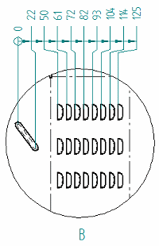
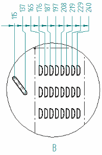
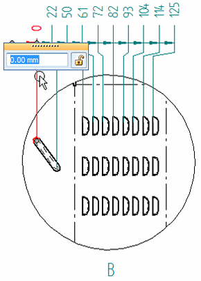

Change the coordinate origin value
When you place coordinate dimensions on a detail drawing view that reference an origin that is not on the same sheet, you can change the value of the origin dimension in the detail view to show a nonzero value. All of the related dimensions in the group are updated accordingly.
|
Before |
After |
|
 |
 |
-
Right-click the origin dimension and choose Properties.
-
On the Lines and Coordinate tab, in the Coordinate section, do the following:
-
From the Common Origin list, select None.
-
Select Show origin dimension line.
-
Select Allow origin value change.
-
-
Double-click the origin dimension text.

-
In the value edit box, enter the value that matches the measurement dimension in the principal drawing view.
-
To reset the origin to the zero value, double-click the origin dimension. In the value edit box, click the Not Zero Value button.
-
If you set these options in the dimension style, then you can skip the first two steps.
How do I
Place coordinate dimensions automaticallyPlace a coordinate dimension
Place a coordinate dimension using a coordinate system
Place an angular coordinate dimension
Place coordinate dimensions between drawing views
Change the origin dimension in a coordinate dimension group
Learn more
Ordinate dimensionsCoordinate dimension alignment sets
Adding and removing jogs on coordinate dimensions
Look up more details
Dimension command barCoordinate dimension handles
Automatic Coordinate Dimension command
Automatic Coordinate Dimension command bar
Keypoint Options dialog box
Coordinate Dimension command
Angular Coordinate Dimension command
Change Coordinate Origin command
Lines and Coordinate tab (Dimension Style and Dimension Properties)